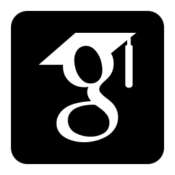

Rukhshan Haroon (he/him)



Hey! I’m Rukhshan, a fourth-year Ph.D. candidate in Computer Science at Tufts University.
As an accessibility and human-computer interaction researcher, I study, build and evaluate AI-mediated communication systems designed to bridge communication differences between autistic and non-autistic individuals, with a current focus on auditing how large language models (LLMs) exhibit normative biases when mediating between them. A core theme of my research is shared responsibility: designing systems that provide communication support to both autistic and non-autistic users, rather than placing the burden on one side.
I am advised by Fahad Dogar.
Here is my CV.
Prior to Tufts, I completed my undergraduate degree in Computer Science from Lahore University of Management Sciences (LUMS), Pakistan. I was advised by Zartash Uzmi and Fareed Zaffar.
Research interests: Human–AI interaction · Accessibility · Benchmarking bias and fairness in AI · AI-mediated communication · Simulation · Participatory design · Mixed-methods research
News
- Oct 2025 Award NeuroBridge received the Best Student Paper Award üèÜ at ASSETS 2025.
- Oct 2025 ConferenceTalk Presented NeuroBridge at ASSETS 2025 (Denver, CO, USA).
- Oct 2025 Doctoral Consortium Participated in the ASSETS 2025 Doctoral Consortium.
- Apr 2025 Workshop Participated in the Generative AI and Accessibility workshop at CHI 2025.
- Mar 2025 PanelTalk Gave a research talk at a CRA UR2PhD Workshop (Research & Social Good).
- Dec 2024 Milestone Passed my Ph.D. candidacy exam.
- Oct 2024 ConferenceTalk Presented TwIPS at ASSETS 2024 (St. John’s, NL, Canada).
- Oct 2023 Conference Attended ASSETS 2023 (New York City, USA).
- Sep 2022 Milestone Started my Ph.D. in Computer Science at Tufts University.
Research Papers
-
NeuroBridge: Using Generative AI to Bridge Cross-neurotype Communication Differences with Neurotypical Perspective-taking
The 27th International ACM SIGACCESS Conference on Computers and Accessibility (ASSETS 2025). Denver, Colorado, USA.
Best Student Paper üèÜ
Press Coverage: TuftsNow
@inproceedings{haroon2025neurobridge, author = {Haroon, Rukhshan and Wigdor, Kyle and Yang, Katie and Toumanios, Nicole and Crehan, Eileen T. and Dogar, Fahad}, title = {NeuroBridge: Using Generative AI to Bridge Cross-neurotype Communication Differences with Neurotypical Perspective-taking}, booktitle = {Proceedings of the 27th International ACM SIGACCESS Conference on Computers and Accessibility (ASSETS 2025)}, address = {Denver, CO, USA}, year = {2025}, url = {https://rukhshan23.github.io/assets-2025.pdf} } -
TwIPS: A Large Language Model Powered Texting Application to Simplify Conversational Nuances for Autistic Users
The 26th International ACM SIGACCESS Conference on Computers and Accessibility (ASSETS 2024). St. John's, Newfoundland and Labrador, Canada.
@inproceedings{10.1145/3663548.3675633, author = {Haroon, Rukhshan and Dogar, Fahad}, title = {TwIPS: A Large Language Model Powered Texting Application to Simplify Conversational Nuances for Autistic Users}, year = {2024}, isbn = {9798400706776}, publisher = {Association for Computing Machinery}, address = {New York, NY, USA}, url = {https://doi.org/10.1145/3663548.3675633}, doi = {10.1145/3663548.3675633}, booktitle = {Proceedings of the 26th International ACM SIGACCESS Conference on Computers and Accessibility}, articleno = {24}, numpages = {18}, location = {St. John's, NL, Canada}, series = {ASSETS '24} } -
On the Frontline During the Covid-19 Pandemic: Gender Inequality and Experiences of Healthcare Workers in Pakistan
Presented at ACM SIGCAS/SIGCHI Conference on Computing and Sustainable Societies (COMPASS) 2023 in Cape Town, South Africa.
Published in ACM Journal on Computing and Sustainable Societies (JCSS), vol. 2, issue 1, March 2024.
@article{10.1145/3616862, author = {Haroon, Rukhshan and Naeem, Ayesha and Sajjad, Priya Fatima and Uzmi, Zartash Afzal}, title = {On the Frontline During the COVID-19 Pandemic: Gender Inequality and Experiences of Healthcare Workers in Pakistan}, year = {2024}, issue_date = {March 2024}, publisher = {Association for Computing Machinery}, address = {New York, NY, USA}, volume = {2}, number = {1}, url = {https://doi.org/10.1145/3616862}, doi = {10.1145/3616862}, journal = {ACM J. Comput. Sustain. Soc.}, month = jan, articleno = {8}, numpages = {30}, keywords = {Gender, healthcare workers, Covid-19} } -
LLMProxy: Reducing Cost to Access Large Language Models
Under submission in 2024.
@misc{martin2024llmproxyreducingcostaccess, title={LLMProxy: Reducing Cost to Access Large Language Models}, author={Noah Martin and Abdullah Bin Faisal and Hiba Eltigani and Rukhshan Haroon and Swaminathan Lamelas and Fahad Dogar}, year={2024}, eprint={2410.11857}, archivePrefix={arXiv}, primaryClass={cs.DC}, url={https://arxiv.org/abs/2410.11857}, } -
SoK: A Tale of Reduction, Security and Correctness - Evaluating Program Debloating Paradigms and Their Compositions
28th European Symposium on Research in Computer Security (ESORICS 2023). The Hague, The Netherlands.
@inproceedings{10.1007/978-3-031-51482-1_12, author = {Ali, Muaz and Muzammil, Muhammad and Karim, Faraz and Naeem, Ayesha and Haroon, Rukhshan and Haris, Muhammad and Nadeem, Huzaifah and Sabir, Waseem and Shaon, Fahad and Zaffar, Fareed and Yegneswaran, Vinod and Gehani, Ashish and Rahaman, Sazzadur}, title = {SoK: A Tale of Reduction, Security, and Correctness - Evaluating Program Debloating Paradigms and Their Compositions}, year = {2023}, isbn = {978-3-031-51481-4}, publisher = {Springer-Verlag}, address = {Berlin, Heidelberg}, url = {https://doi.org/10.1007/978-3-031-51482-1_12}, doi = {10.1007/978-3-031-51482-1_12}, booktitle = {Computer Security – ESORICS 2023: 28th European Symposium on Research in Computer Security, The Hague, The Netherlands, September 25–29, 2023, Proceedings, Part IV}, pages = {229–249}, numpages = {21}, keywords = {Program Debloating, Debloating Comparison, Benchmark}, location = {The Hague, The Netherlands} } -
Unpacking Misinformation Amid the COVID-19 Pandemic: A Mixed Methods Study
IEEE Internet Computing, vol. 26, no. 2, pp. 7-18, 1 March-April 2022.
@ARTICLE{sajjad-covid, author={Sajjad, Priya Fatima and Haroon, Rukhshan and Naeem, Ayesha and Uswah-E-Fatima and Uzmi, Zartash Afzal}, journal={IEEE Internet Computing}, title={Unpacking Misinformation Amid the COVID-19 Pandemic: A Mixed Methods Study}, year={2022}, volume={26}, number={2}, pages={7-18}, keywords={COVID-19;Fake news;Social networking (online);Vaccines;Pandemics;Government;Interviews}, doi={10.1109/MIC.2022.3154318}}
Teaching
-
Teaching Assistant, Tufts University — Human-Computer Interaction
(Spring 2026)
Instructor: Rob Jacob -
Teaching Assistant, Tufts University — Generative AI for Social Impact
(Spring 2025)
Instructor: Fahad Dogar -
Teaching Assistant, Tufts University — Computer Networks
(Fall 2025)
Instructor: Fahad Dogar
Contact
Email: rukhshan.haroon@tufts.edu
Office: Room # 440K, 177 College Ave, Medford, MA 02155.